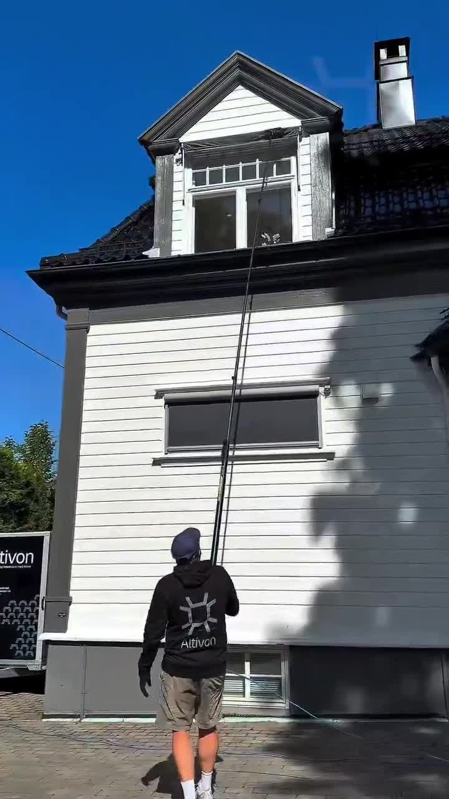
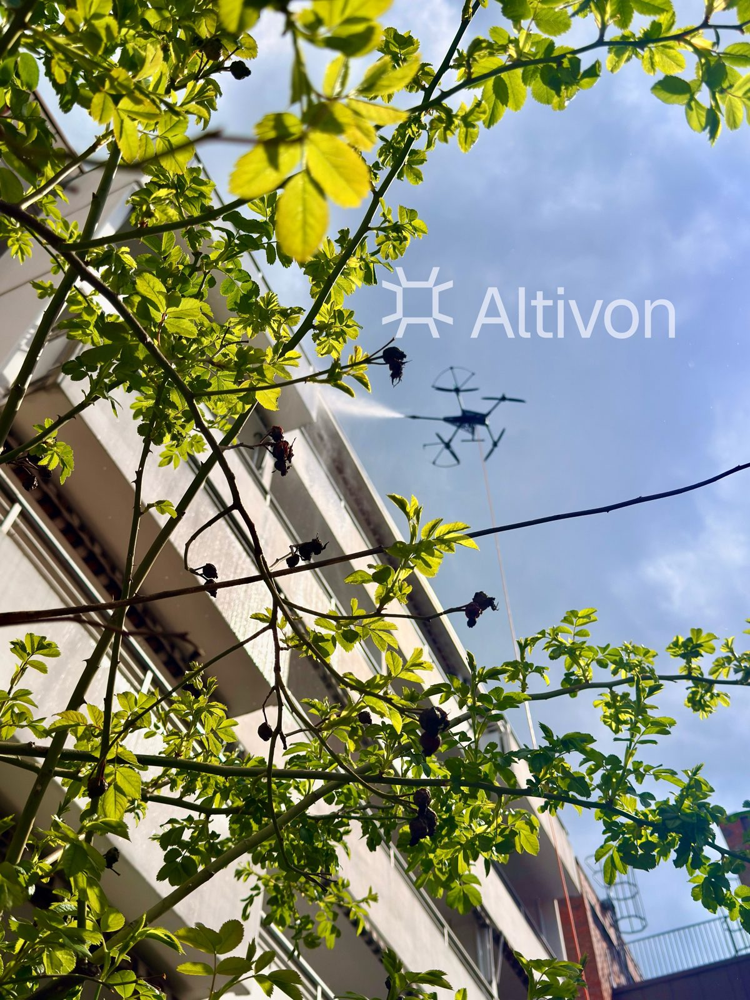
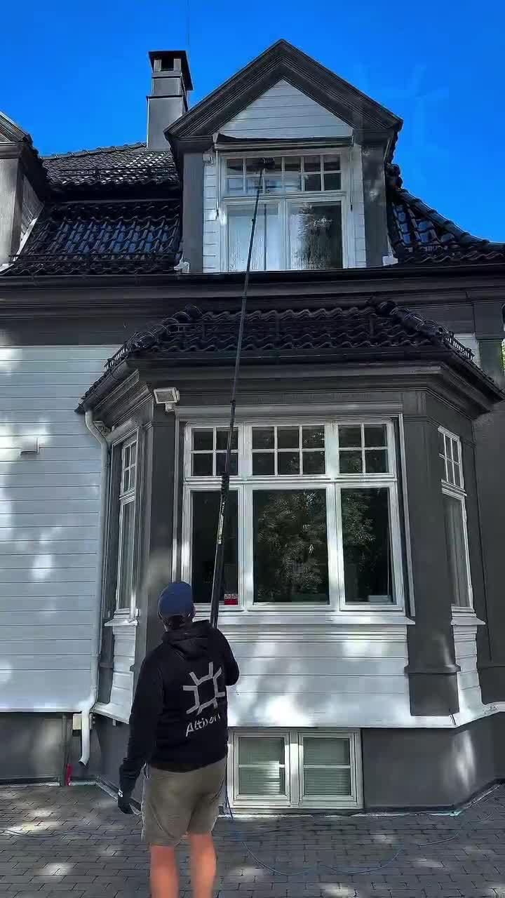
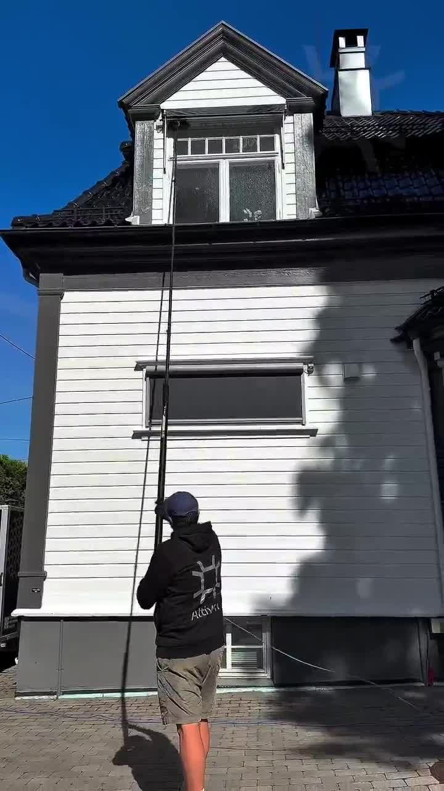
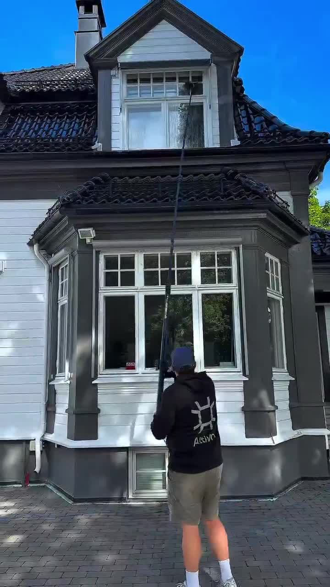
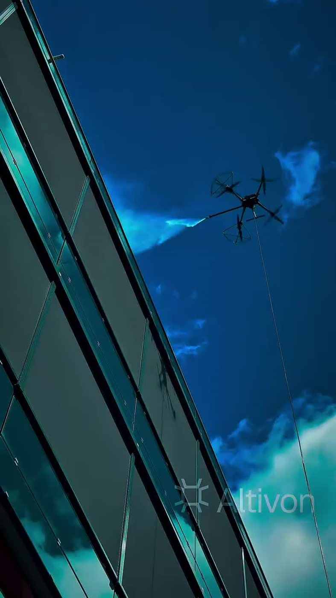
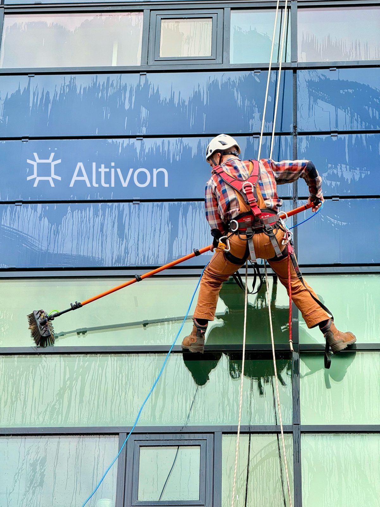
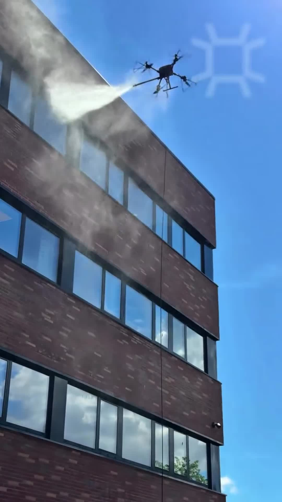
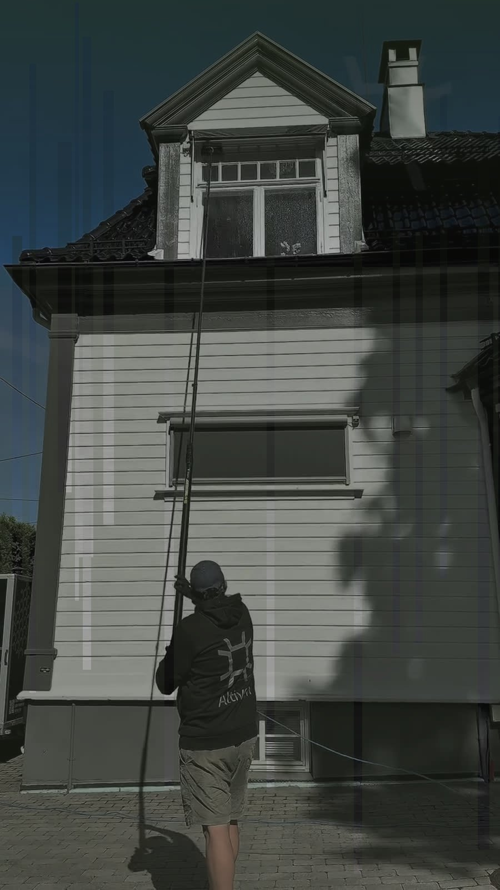

Guider og innsikt om fasadevask, takrens, inspeksjon, termografi og datadrevet vedlikehold – skrevet for byggeiere, styrer og forvaltere.

Fra befaring til dokumentert resultat: hele prosessen forklart, slik den faktisk gjennomføres.
5 min lesetid · metode · fasadevask
Raskere, rimeligere og tryggere for vask og inspeksjon – og ærlig om når tradisjonelle metoder fortsatt trengs.
5 min lesetid · stillas · metodevalg
Betong, tegl, tre, metall og glass – metoden tilpasses flaten. Det er det som skiller fagmessig vask fra skade.
4 min lesetid · materialer · softwash
Skitne paneler taper produksjon, og mose bryter ned taket. Begge deler løses skånsomt – uten at noen går på taket.
4 min lesetid · solceller · takrens
Beboerne kan være hjemme, området sikres, og operasjonen risikovurderes. Slik ivaretas tryggheten i praksis.
4 min lesetid · beboere · sikkerhet
Biologisk nedbrytbare midler, ofte bare rent vann – og bevisst håndtering av avrenning.
3 min lesetid · miljø · vaskemidler
Areal, tilstand, materiale og tilkomst styrer prisen. Slik får du et presist tilbud – raskt.
5 min lesetid · pris · tilbudVi følger opp vask, takrens og inspeksjon automatisk – du får jevn standard og forutsigbar økonomi.
4 min lesetid · årsavtale · intervaller
Foto før/etter som minimum – og strukturerte tilstandsrapporter med stedfestede, graderte funn.
4 min lesetid · rapport · dokumentasjon
Fargekameraet viser det synlige – termisk kamera viser det skjulte. Sammen gir de hele bildet.
5 min lesetid · termografi · RGB
Centimeternøyaktighet med riktig oppsett, levert i standardformater – og ærlig om hva droneinspeksjon ikke erstatter.
5 min lesetid · 3D · nøyaktighet
Hvem kan bestille, hva sier borettslagsloven, og hvordan dokumenteres jobben for protokoll og forsikring?
6 min lesetid · borettslag · styreDette skal være på plass hos en seriøs operatør – og slik ivaretas naboer og personvern i praksis.
5 min lesetid · regelverk · sertifikaterNår på året bør du vaske, hva skjer ved dårlig vær – og må du egentlig være hjemme?
5 min lesetid · sesong · vær